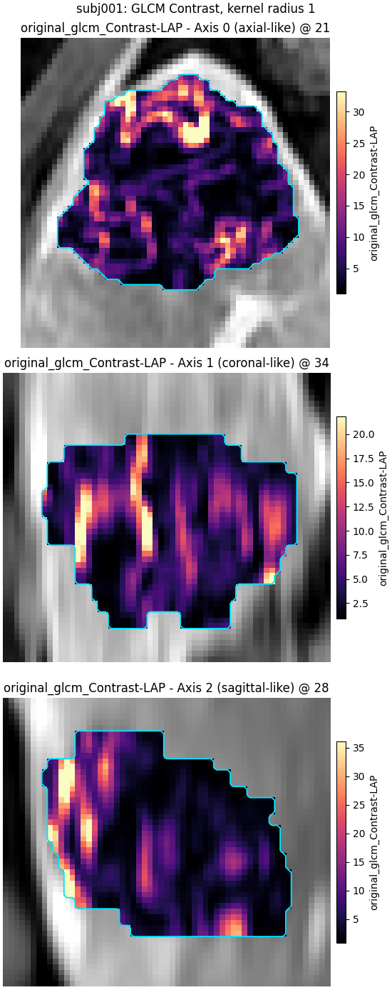
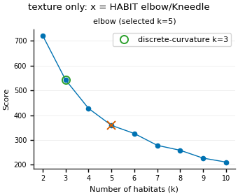
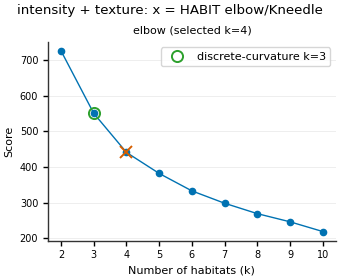
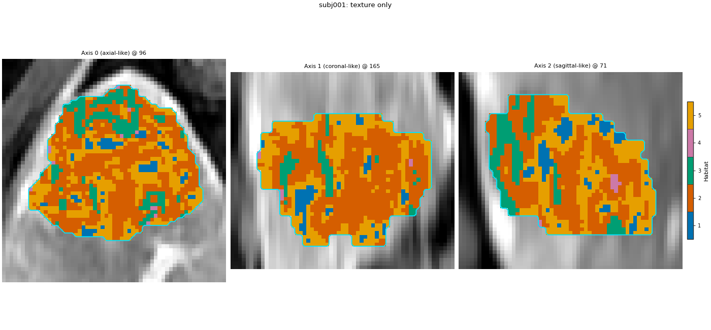
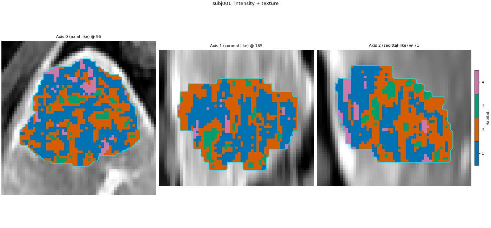
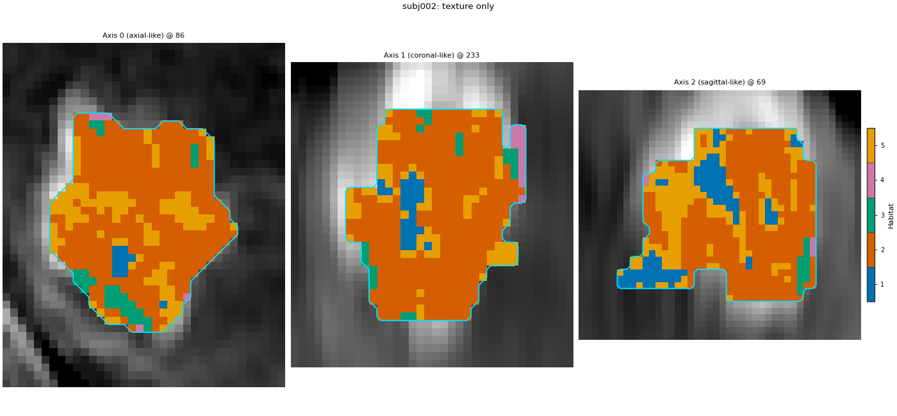
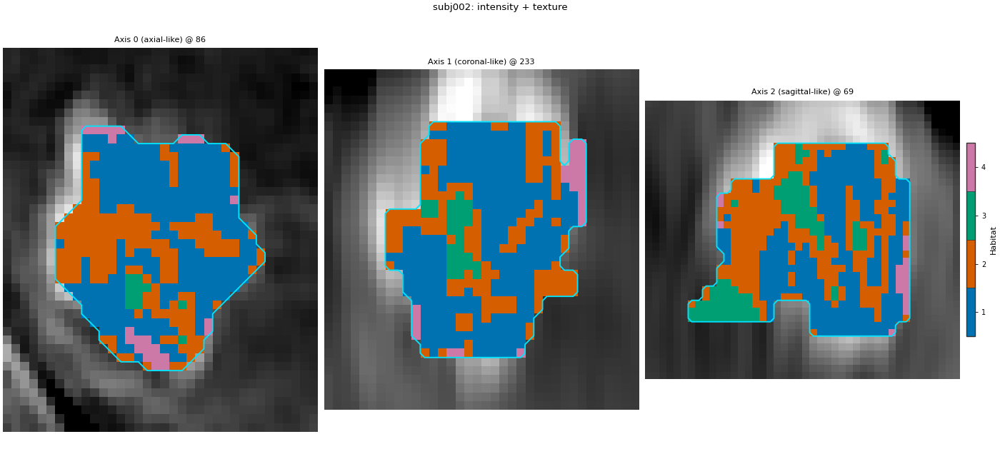

Note
Go to the end to download the full example code.
Texture feature maps, alone and with intensity#
Background. Two regions of a tumour can have the same mean brightness but a different local pattern: one smooth, one speckled. Intensity alone cannot separate them. Voxel-wise texture gives every voxel a few numbers that describe its small neighbourhood. Those numbers can replace the intensity in the feature table that the habitat model clusters, or sit next to it.
Purpose. You will compute two GLCM texture maps (Contrast and Idm) around every voxel of the arterial-phase (LAP) image and run the two-step analysis twice: once on the two texture columns alone, once on LAP intensity plus the same two texture columns. You will then compare the two runs by the number of habitats the elbow rule picks, by their centroids, and by how much their habitat maps agree (adjusted Rand index, which ignores how the habitat ids are numbered).
When to use. You expect habitats to differ in local structure (e.g. heterogeneous enhancement or fine necrosis), not only in how bright they are, and you want to know how much the intensity column changes the habitats. Voxel-wise texture is slower to extract than raw intensity.
Analysis definition. The approved two-step definition with LAP as
the only image, and exactly ONE factor varied between the two runs:
the feature set of the extract stage (texture only vs intensity +
texture). Subject-level winsorize + z-score, 30 k-means supervoxels,
cohort-level 10-bin binning, k-means 2..10 habitats by elbow,
nearest-centroid assignment and the seed are identical in both runs.
Both runs are fitted on subj001 + subj002. The quantify stages are cut
to volume on this page to keep it fast.
Key terms. Full definitions are on Concepts.
voxel-wise GLCM – a grey-level co-occurrence matrix computed in a small cube around each voxel; Contrast is high where neighbouring grey levels differ a lot, Idm (inverse difference moment) is high where the neighbourhood is homogeneous.
kernel radius – half the size of that cube: radius 1 means a 3 x 3 x 3 neighbourhood.
bin width – the grey-level discretisation used before the GLCM is counted, in the image’s own intensity units.
concat extractor – several voxel feature extractors run on the same ROI and their columns are placed side by side, one row per voxel.
adjusted Rand index (ARI) – agreement between two label maps of the same voxels: 1 = the same partition (whatever the ids are called), about 0 = no more agreement than chance.
Texture parameters are part of the method: report them with the results.
Load the cohort#
Only the arterial phase is loaded: both the intensity column and the texture columns are computed on it. Two subjects define the habitats. sphinx_gallery_thumbnail_number = 1
from pathlib import Path
import matplotlib.pyplot as plt
import numpy as np
import pandas as pd
from sklearn.metrics import adjusted_rand_score
from habit.contracts import HabitatModel, HabitatMap, cohort_from_directory
from habit.datasets import fetch_demo
from habit.execution import backend_from_policy
from habit.recipes import Study
from habit.spec import HabitatSpec, Spec, Stage
from habit.spec.policy import RunPolicy
from habit.viz import (
plot_cluster_validation_from_report,
plot_habitat_overlay,
plot_voxel_texture_slice,
)
from habit.voxel_features import build_voxel_extractor
# Change DATA / MODALITIES / ROI to your preprocessed layout.
DATA = fetch_demo()
MODALITIES = ("LAP",)
ROI = "LAP"
cohort = cohort_from_directory(DATA, modalities=MODALITIES, roi=ROI)
train = cohort[:2]
print(train)
Path("out").mkdir(exist_ok=True)
HABIT demo data (cached)
DATA (preprocessed root): C:\Users\dongm\.habit_data\demo-data-v1\preprocessed
On-disk inventory of this folder:
subjects (5): subj001, subj002, subj003, subj004, subj005
image series: LAP, PVP, delay_3min, pre_contrast
mask keys: LAP, PVP, delay_3min, pre_contrast
example image: images/subj001/delay_3min/WATER__BH_Ax_LAVA_Flex_3min_Series0012.nrrd
example mask: masks/subj001/delay_3min/WATER__BH_Ax_LAVA_Flex_10min_Series0017_mask.nrrd
Your own data must use the same folder tree (change IDs / series names):
DATA/
images/<subject_id>/<modality>/<one image file>
masks/<subject_id>/<roi>/<one mask file>
Then load it with the same call the demos use:
cohort = cohort_from_directory(DATA, modalities=("LAP",), roi="LAP")
Swap DATA / modalities / roi to match your tree. Mask key is often the
same as one image series (here LAP).
Cohort(2 subjects [subj001, subj002])
The two feature sets#
TEXTURE holds the voxel-wise GLCM settings shared by both runs, so
the texture columns are computed in exactly the same way:
kernel_radius=1– a 3 x 3 x 3 cube around each voxel. A larger radius smooths the map and costs much more time; radius 1 keeps this page fast.binWidth=25– intensities are grouped into bins 25 units wide before the co-occurrence matrix is counted. The units are those of the image (raw MR signal), so the samebinWidthgives a different number of grey levels on a brighter or darker scan. This is an IBSI discretisation choice (fixed bin width vs fixed bin count): choose it for your data and report it.
The only difference between the two extract specs is whether the
raw LAP intensity column is added in front of the texture columns.
TEXTURE = {
"modalities": list(MODALITIES),
"kernel_radius": 1,
# One (or a few) features from every texture family the voxel-radiomics
# extractor supports. Families, not every IBSI name: enough to show
# the route without making this page a full IBSI dump.
"params": {
"setting": {"binWidth": 25},
"featureClass": {
"glcm": ["Contrast", "Idm", "Correlation", "JointEntropy"],
"glrlm": ["ShortRunEmphasis", "LongRunEmphasis", "RunEntropy"],
"glszm": ["SmallAreaEmphasis", "LargeAreaEmphasis", "ZoneEntropy"],
"gldm": ["SmallDependenceEmphasis", "LargeDependenceEmphasis"],
"ngtdm": ["Coarseness", "Contrast", "Busyness"],
},
},
}
# Texture only: two columns per voxel (GLCM Contrast, GLCM Idm).
EXTRACT_TEXTURE = Spec("voxel_radiomics", {**TEXTURE, "roi": ROI})
# Intensity + texture: the LAP intensity column, then the same two
# texture columns, side by side (one row per voxel).
EXTRACT_BOTH = Spec(
"concat",
{
"extractors": [
{"name": "raw", "params": {"modalities": list(MODALITIES)}},
{"name": "voxel_radiomics", "params": TEXTURE},
],
"roi": ROI,
},
)
def texture_spec(name: str, extract: Spec) -> HabitatSpec:
"""
Build the two-step spec used by both runs, with a given extract stage.
Args:
name: Name of the analysis (stored in the model and manifest).
extract: The ``extract`` component; the only thing that differs
between the two runs on this page.
Returns:
A :class:`~habit.spec.HabitatSpec` whose every other stage is the
approved two-step definition.
"""
return HabitatSpec(
name=name,
stages=(
Stage("extract", extract),
# preprocess (subject-level): clip each column to that patient's
# own 1st..99th percentile.
Stage("preprocess", Spec("winsorize", {"winsor_limits": [0.01, 0.01]})),
# preprocess2 (subject-level): rescale each column to 0..1 with
# that patient's own min and max. Intensity (hundreds), Contrast
# (can be much larger) and Idm (0..1) have different units;
# k-means uses Euclidean distance, so without this step the
# widest column would decide the habitats alone.
Stage("preprocess2", Spec("zscore")),
# partition: 30 supervoxels per tumour, on all extracted columns.
Stage("partition", Spec("kmeans", {"n_supervoxels": 30})),
# pool: stack both training subjects' supervoxels.
Stage("pool", Spec("pool")),
# preprocess_cohort (cohort-level): 10 equal-width bins per
# column, edges learned on the pooled training supervoxels.
# fit: one k-means for the cohort, 2..10 habitats, elbow rule.
Stage(
"fit",
Spec(
"kmeans",
{"min_habitats": 2, "max_habitats": 10, "validation": "elbow", "n_init": 10},
),
),
# assign: nearest centroid for every supervoxel, then its voxels.
Stage("assign", Spec("nearest_centroid")),
# quantify: volume fractions only on this page.
Stage("volume", Spec("volume")),
),
random_seed=0,
)
spec_texture = texture_spec("texture_only_two_step", EXTRACT_TEXTURE)
spec_both = texture_spec("intensity_texture_two_step", EXTRACT_BOTH)
Look at one texture map#
Before fitting, build only the extract component and call it on
the first subject. The result is the per-voxel table the model will
see: one row per ROI voxel, one column per feature. The column names
carry the feature and the modality it was computed on.
subject = train[0]
field = build_voxel_extractor(EXTRACT_BOTH)(subject)
print(f"{field.values.shape[0]} voxels, columns: {list(field.feature_names)}")
print(field.feature_frame().describe().round(3))
contrast_name = next(name for name in field.feature_names if "Contrast" in name)
fig = plot_voxel_texture_slice(
field,
feature=contrast_name,
anatomy=subject.image("LAP"),
roi_mask=subject.mask(ROI),
title=f"{subject.subject_id}: GLCM Contrast, kernel radius 1",
crop_to="roi",
)
fig.savefig("out/texture_maps_contrast.png", dpi=150, bbox_inches="tight")
plt.show()

voxel_radiomics: glcm batch 1/35 0.746s peak=1MiB
voxel_radiomics: glcm batch 2/35 0.018s peak=2MiB
voxel_radiomics: glcm batch 3/35 0.018s peak=3MiB
voxel_radiomics: glcm batch 4/35 0.018s peak=4MiB
voxel_radiomics: glcm batch 5/35 0.017s peak=4MiB
voxel_radiomics: glcm batch 6/35 0.018s peak=5MiB
voxel_radiomics: glcm batch 7/35 0.016s peak=6MiB
voxel_radiomics: glcm batch 8/35 0.017s peak=7MiB
voxel_radiomics: glcm batch 9/35 0.017s peak=8MiB
voxel_radiomics: glcm batch 10/35 0.019s peak=9MiB
voxel_radiomics: glcm batch 11/35 0.020s peak=10MiB
voxel_radiomics: glcm batch 12/35 0.017s peak=11MiB
voxel_radiomics: glcm batch 13/35 0.017s peak=12MiB
voxel_radiomics: glcm batch 14/35 0.018s peak=13MiB
voxel_radiomics: glcm batch 15/35 0.017s peak=13MiB
voxel_radiomics: glcm batch 16/35 0.016s peak=14MiB
voxel_radiomics: glcm batch 17/35 0.017s peak=15MiB
voxel_radiomics: glcm batch 18/35 0.018s peak=16MiB
voxel_radiomics: glcm batch 19/35 0.016s peak=17MiB
voxel_radiomics: glcm batch 20/35 0.016s peak=18MiB
voxel_radiomics: glcm batch 21/35 0.016s peak=19MiB
voxel_radiomics: glcm batch 22/35 0.017s peak=20MiB
voxel_radiomics: glcm batch 23/35 0.017s peak=21MiB
voxel_radiomics: glcm batch 24/35 0.017s peak=22MiB
voxel_radiomics: glcm batch 25/35 0.018s peak=22MiB
voxel_radiomics: glcm batch 26/35 0.016s peak=23MiB
voxel_radiomics: glcm batch 27/35 0.020s peak=24MiB
voxel_radiomics: glcm batch 28/35 0.019s peak=25MiB
voxel_radiomics: glcm batch 29/35 0.025s peak=26MiB
voxel_radiomics: glcm batch 30/35 0.020s peak=27MiB
voxel_radiomics: glcm batch 31/35 0.033s peak=28MiB
voxel_radiomics: glcm batch 32/35 0.019s peak=29MiB
voxel_radiomics: glcm batch 33/35 0.018s peak=30MiB
voxel_radiomics: glcm batch 34/35 0.019s peak=31MiB
voxel_radiomics: glcm batch 35/35 0.020s peak=31MiB
voxel_radiomics: glrlm batch 1/35 0.087s peak=32MiB
voxel_radiomics: glrlm batch 2/35 0.017s peak=33MiB
voxel_radiomics: glrlm batch 3/35 0.019s peak=34MiB
voxel_radiomics: glrlm batch 4/35 0.019s peak=35MiB
voxel_radiomics: glrlm batch 5/35 0.021s peak=36MiB
voxel_radiomics: glrlm batch 6/35 0.019s peak=37MiB
voxel_radiomics: glrlm batch 7/35 0.018s peak=38MiB
voxel_radiomics: glrlm batch 8/35 0.020s peak=39MiB
voxel_radiomics: glrlm batch 9/35 0.021s peak=40MiB
voxel_radiomics: glrlm batch 10/35 0.020s peak=40MiB
voxel_radiomics: glrlm batch 11/35 0.018s peak=41MiB
voxel_radiomics: glrlm batch 12/35 0.021s peak=42MiB
voxel_radiomics: glrlm batch 13/35 0.018s peak=43MiB
voxel_radiomics: glrlm batch 14/35 0.019s peak=44MiB
voxel_radiomics: glrlm batch 15/35 0.017s peak=45MiB
voxel_radiomics: glrlm batch 16/35 0.018s peak=46MiB
voxel_radiomics: glrlm batch 17/35 0.018s peak=47MiB
voxel_radiomics: glrlm batch 18/35 0.020s peak=48MiB
voxel_radiomics: glrlm batch 19/35 0.019s peak=49MiB
voxel_radiomics: glrlm batch 20/35 0.021s peak=49MiB
voxel_radiomics: glrlm batch 21/35 0.020s peak=50MiB
voxel_radiomics: glrlm batch 22/35 0.019s peak=51MiB
voxel_radiomics: glrlm batch 23/35 0.017s peak=52MiB
voxel_radiomics: glrlm batch 24/35 0.017s peak=53MiB
voxel_radiomics: glrlm batch 25/35 0.020s peak=54MiB
voxel_radiomics: glrlm batch 26/35 0.018s peak=55MiB
voxel_radiomics: glrlm batch 27/35 0.021s peak=56MiB
voxel_radiomics: glrlm batch 28/35 0.019s peak=57MiB
voxel_radiomics: glrlm batch 29/35 0.017s peak=58MiB
voxel_radiomics: glrlm batch 30/35 0.016s peak=1MiB
voxel_radiomics: glrlm batch 31/35 0.016s peak=2MiB
voxel_radiomics: glrlm batch 32/35 0.016s peak=3MiB
voxel_radiomics: glrlm batch 33/35 0.015s peak=4MiB
voxel_radiomics: glrlm batch 34/35 0.015s peak=4MiB
voxel_radiomics: glrlm batch 35/35 0.015s peak=5MiB
voxel_radiomics: glszm batch 1/35 0.039s peak=6MiB
voxel_radiomics: glszm batch 2/35 0.014s peak=7MiB
voxel_radiomics: glszm batch 3/35 0.013s peak=8MiB
voxel_radiomics: glszm batch 4/35 0.014s peak=9MiB
voxel_radiomics: glszm batch 5/35 0.018s peak=10MiB
voxel_radiomics: glszm batch 6/35 0.014s peak=11MiB
voxel_radiomics: glszm batch 7/35 0.015s peak=12MiB
voxel_radiomics: glszm batch 8/35 0.015s peak=13MiB
voxel_radiomics: glszm batch 9/35 0.017s peak=14MiB
voxel_radiomics: glszm batch 10/35 0.017s peak=14MiB
voxel_radiomics: glszm batch 11/35 0.016s peak=15MiB
voxel_radiomics: glszm batch 12/35 0.018s peak=16MiB
voxel_radiomics: glszm batch 13/35 0.015s peak=17MiB
voxel_radiomics: glszm batch 14/35 0.015s peak=18MiB
voxel_radiomics: glszm batch 15/35 0.014s peak=19MiB
voxel_radiomics: glszm batch 16/35 0.014s peak=20MiB
voxel_radiomics: glszm batch 17/35 0.014s peak=21MiB
voxel_radiomics: glszm batch 18/35 0.014s peak=22MiB
voxel_radiomics: glszm batch 19/35 0.014s peak=23MiB
voxel_radiomics: glszm batch 20/35 0.016s peak=23MiB
voxel_radiomics: glszm batch 21/35 0.014s peak=24MiB
voxel_radiomics: glszm batch 22/35 0.017s peak=25MiB
voxel_radiomics: glszm batch 23/35 0.016s peak=26MiB
voxel_radiomics: glszm batch 24/35 0.014s peak=27MiB
voxel_radiomics: glszm batch 25/35 0.014s peak=28MiB
voxel_radiomics: glszm batch 26/35 0.015s peak=29MiB
voxel_radiomics: glszm batch 27/35 0.019s peak=30MiB
voxel_radiomics: glszm batch 28/35 0.018s peak=31MiB
voxel_radiomics: glszm batch 29/35 0.018s peak=32MiB
voxel_radiomics: glszm batch 30/35 0.021s peak=32MiB
voxel_radiomics: glszm batch 31/35 0.017s peak=33MiB
voxel_radiomics: glszm batch 32/35 0.015s peak=34MiB
voxel_radiomics: glszm batch 33/35 0.019s peak=35MiB
voxel_radiomics: glszm batch 34/35 0.019s peak=36MiB
voxel_radiomics: glszm batch 35/35 0.017s peak=37MiB
voxel_radiomics: gldm batch 1/35 0.011s peak=43MiB
voxel_radiomics: gldm batch 2/35 0.009s peak=44MiB
voxel_radiomics: gldm batch 3/35 0.008s peak=46MiB
voxel_radiomics: gldm batch 4/35 0.009s peak=46MiB
voxel_radiomics: gldm batch 5/35 0.009s peak=47MiB
voxel_radiomics: gldm batch 6/35 0.008s peak=48MiB
voxel_radiomics: gldm batch 7/35 0.007s peak=48MiB
voxel_radiomics: gldm batch 8/35 0.007s peak=50MiB
voxel_radiomics: gldm batch 9/35 0.007s peak=51MiB
voxel_radiomics: gldm batch 10/35 0.007s peak=52MiB
voxel_radiomics: gldm batch 11/35 0.007s peak=53MiB
voxel_radiomics: gldm batch 12/35 0.007s peak=54MiB
voxel_radiomics: gldm batch 13/35 0.007s peak=55MiB
voxel_radiomics: gldm batch 14/35 0.006s peak=56MiB
voxel_radiomics: gldm batch 15/35 0.009s peak=59MiB
voxel_radiomics: gldm batch 16/35 0.007s peak=58MiB
voxel_radiomics: gldm batch 17/35 0.008s peak=60MiB
voxel_radiomics: gldm batch 18/35 0.007s peak=60MiB
voxel_radiomics: gldm batch 19/35 0.007s peak=62MiB
voxel_radiomics: gldm batch 20/35 0.007s peak=62MiB
voxel_radiomics: gldm batch 21/35 0.007s peak=63MiB
voxel_radiomics: gldm batch 22/35 0.007s peak=64MiB
voxel_radiomics: gldm batch 23/35 0.008s peak=64MiB
voxel_radiomics: gldm batch 24/35 0.008s peak=8MiB
voxel_radiomics: gldm batch 25/35 0.007s peak=9MiB
voxel_radiomics: gldm batch 26/35 0.008s peak=10MiB
voxel_radiomics: gldm batch 27/35 0.008s peak=10MiB
voxel_radiomics: gldm batch 28/35 0.007s peak=12MiB
voxel_radiomics: gldm batch 29/35 0.006s peak=12MiB
voxel_radiomics: gldm batch 30/35 0.006s peak=12MiB
voxel_radiomics: gldm batch 31/35 0.007s peak=13MiB
voxel_radiomics: gldm batch 32/35 0.007s peak=14MiB
voxel_radiomics: gldm batch 33/35 0.007s peak=15MiB
voxel_radiomics: gldm batch 34/35 0.008s peak=16MiB
voxel_radiomics: gldm batch 35/35 0.008s peak=15MiB
voxel_radiomics: ngtdm batch 1/35 0.023s peak=13MiB
voxel_radiomics: ngtdm batch 2/35 0.011s peak=14MiB
voxel_radiomics: ngtdm batch 3/35 0.012s peak=15MiB
voxel_radiomics: ngtdm batch 4/35 0.011s peak=16MiB
voxel_radiomics: ngtdm batch 5/35 0.009s peak=17MiB
voxel_radiomics: ngtdm batch 6/35 0.010s peak=18MiB
voxel_radiomics: ngtdm batch 7/35 0.011s peak=19MiB
voxel_radiomics: ngtdm batch 8/35 0.008s peak=20MiB
voxel_radiomics: ngtdm batch 9/35 0.008s peak=21MiB
voxel_radiomics: ngtdm batch 10/35 0.008s peak=21MiB
voxel_radiomics: ngtdm batch 11/35 0.009s peak=22MiB
voxel_radiomics: ngtdm batch 12/35 0.008s peak=23MiB
voxel_radiomics: ngtdm batch 13/35 0.009s peak=24MiB
voxel_radiomics: ngtdm batch 14/35 0.008s peak=25MiB
voxel_radiomics: ngtdm batch 15/35 0.009s peak=26MiB
voxel_radiomics: ngtdm batch 16/35 0.008s peak=27MiB
voxel_radiomics: ngtdm batch 17/35 0.008s peak=28MiB
voxel_radiomics: ngtdm batch 18/35 0.008s peak=29MiB
voxel_radiomics: ngtdm batch 19/35 0.008s peak=29MiB
voxel_radiomics: ngtdm batch 20/35 0.010s peak=30MiB
voxel_radiomics: ngtdm batch 21/35 0.009s peak=31MiB
voxel_radiomics: ngtdm batch 22/35 0.009s peak=32MiB
voxel_radiomics: ngtdm batch 23/35 0.008s peak=33MiB
voxel_radiomics: ngtdm batch 24/35 0.011s peak=34MiB
voxel_radiomics: ngtdm batch 25/35 0.010s peak=35MiB
voxel_radiomics: ngtdm batch 26/35 0.010s peak=36MiB
voxel_radiomics: ngtdm batch 27/35 0.008s peak=37MiB
voxel_radiomics: ngtdm batch 28/35 0.008s peak=38MiB
voxel_radiomics: ngtdm batch 29/35 0.008s peak=39MiB
voxel_radiomics: ngtdm batch 30/35 0.008s peak=39MiB
voxel_radiomics: ngtdm batch 31/35 0.009s peak=40MiB
voxel_radiomics: ngtdm batch 32/35 0.010s peak=41MiB
voxel_radiomics: ngtdm batch 33/35 0.009s peak=42MiB
voxel_radiomics: ngtdm batch 34/35 0.008s peak=42MiB
voxel_radiomics: ngtdm batch 35/35 0.008s peak=43MiB
34694 voxels, columns: ['LAP', 'original_glcm_Contrast-LAP', 'original_glcm_Idm-LAP', 'original_glcm_Correlation-LAP', 'original_glcm_JointEntropy-LAP', 'original_glrlm_ShortRunEmphasis-LAP', 'original_glrlm_LongRunEmphasis-LAP', 'original_glrlm_RunEntropy-LAP', 'original_glszm_SmallAreaEmphasis-LAP', 'original_glszm_LargeAreaEmphasis-LAP', 'original_glszm_ZoneEntropy-LAP', 'original_gldm_SmallDependenceEmphasis-LAP', 'original_gldm_LargeDependenceEmphasis-LAP', 'original_ngtdm_Coarseness-LAP', 'original_ngtdm_Contrast-LAP', 'original_ngtdm_Busyness-LAP']
LAP ... original_ngtdm_Busyness-LAP
count 34694.000 ... 34694.000
mean 859.751 ... 0.063
std 161.402 ... 0.104
min 366.000 ... 0.003
25% 739.000 ... 0.033
50% 864.000 ... 0.047
75% 977.000 ... 0.071
max 1420.000 ... 13.788
[8 rows x 16 columns]
F:\work\habit_project\habit\viz\voxel_texture.py:1019: UserWarning: Display geometry conflict: image/anatomy direction does not match mask/label direction. Using the mask/label direction so coronal/sagittal superior-up follows the labelled anatomy. Pass direction= to override.
direction, spacing = resolve_display_geometry(
Fit both runs#
Same training subjects, same seed, same stages; only extract
differs. The texture columns are computed inside each fit_predict
(the log lines are the voxel batches).
result_texture = Study(spec_texture).fit_predict(
train,
backend=backend_from_policy(
RunPolicy(backend="serial", on_subject_failure="continue")
),
)
result_both = Study(spec_both).fit_predict(
train,
backend=backend_from_policy(
RunPolicy(backend="serial", on_subject_failure="continue")
),
)
model_texture = result_texture.habitat_model
model_both = result_both.habitat_model
print("texture only : K =", model_texture.n_habitats, "| features:", list(model_texture.feature_names))
print("intensity + texture : K =", model_both.n_habitats, "| features:", list(model_both.feature_names))
Cohort.map[_ComputeUnits]: 0%| | 0/2 [00:00<?, ?it/s]voxel_radiomics: glcm batch 1/35 0.139s peak=43MiB
voxel_radiomics: glcm batch 2/35 0.017s peak=44MiB
voxel_radiomics: glcm batch 3/35 0.020s peak=45MiB
voxel_radiomics: glcm batch 4/35 0.022s peak=46MiB
voxel_radiomics: glcm batch 5/35 0.019s peak=47MiB
voxel_radiomics: glcm batch 6/35 0.019s peak=48MiB
voxel_radiomics: glcm batch 7/35 0.019s peak=49MiB
voxel_radiomics: glcm batch 8/35 0.021s peak=50MiB
voxel_radiomics: glcm batch 9/35 0.019s peak=50MiB
voxel_radiomics: glcm batch 10/35 0.019s peak=51MiB
voxel_radiomics: glcm batch 11/35 0.019s peak=52MiB
voxel_radiomics: glcm batch 12/35 0.019s peak=53MiB
voxel_radiomics: glcm batch 13/35 0.018s peak=54MiB
voxel_radiomics: glcm batch 14/35 0.021s peak=55MiB
voxel_radiomics: glcm batch 15/35 0.018s peak=56MiB
voxel_radiomics: glcm batch 16/35 0.019s peak=57MiB
voxel_radiomics: glcm batch 17/35 0.018s peak=58MiB
voxel_radiomics: glcm batch 18/35 0.019s peak=1MiB
voxel_radiomics: glcm batch 19/35 0.018s peak=2MiB
voxel_radiomics: glcm batch 20/35 0.017s peak=3MiB
voxel_radiomics: glcm batch 21/35 0.017s peak=4MiB
voxel_radiomics: glcm batch 22/35 0.017s peak=5MiB
voxel_radiomics: glcm batch 23/35 0.018s peak=5MiB
voxel_radiomics: glcm batch 24/35 0.020s peak=6MiB
voxel_radiomics: glcm batch 25/35 0.018s peak=7MiB
voxel_radiomics: glcm batch 26/35 0.018s peak=8MiB
voxel_radiomics: glcm batch 27/35 0.019s peak=9MiB
voxel_radiomics: glcm batch 28/35 0.020s peak=10MiB
voxel_radiomics: glcm batch 29/35 0.021s peak=11MiB
voxel_radiomics: glcm batch 30/35 0.016s peak=12MiB
voxel_radiomics: glcm batch 31/35 0.016s peak=13MiB
voxel_radiomics: glcm batch 32/35 0.018s peak=14MiB
voxel_radiomics: glcm batch 33/35 0.018s peak=14MiB
voxel_radiomics: glcm batch 34/35 0.017s peak=15MiB
voxel_radiomics: glcm batch 35/35 0.016s peak=16MiB
voxel_radiomics: glrlm batch 1/35 0.018s peak=17MiB
voxel_radiomics: glrlm batch 2/35 0.018s peak=18MiB
voxel_radiomics: glrlm batch 3/35 0.018s peak=19MiB
voxel_radiomics: glrlm batch 4/35 0.018s peak=20MiB
voxel_radiomics: glrlm batch 5/35 0.020s peak=21MiB
voxel_radiomics: glrlm batch 6/35 0.018s peak=22MiB
voxel_radiomics: glrlm batch 7/35 0.019s peak=23MiB
voxel_radiomics: glrlm batch 8/35 0.017s peak=23MiB
voxel_radiomics: glrlm batch 9/35 0.023s peak=24MiB
voxel_radiomics: glrlm batch 10/35 0.021s peak=25MiB
voxel_radiomics: glrlm batch 11/35 0.019s peak=26MiB
voxel_radiomics: glrlm batch 12/35 0.021s peak=27MiB
voxel_radiomics: glrlm batch 13/35 0.022s peak=28MiB
voxel_radiomics: glrlm batch 14/35 0.019s peak=29MiB
voxel_radiomics: glrlm batch 15/35 0.020s peak=30MiB
voxel_radiomics: glrlm batch 16/35 0.018s peak=31MiB
voxel_radiomics: glrlm batch 17/35 0.017s peak=32MiB
voxel_radiomics: glrlm batch 18/35 0.021s peak=32MiB
voxel_radiomics: glrlm batch 19/35 0.018s peak=33MiB
voxel_radiomics: glrlm batch 20/35 0.018s peak=34MiB
voxel_radiomics: glrlm batch 21/35 0.021s peak=35MiB
voxel_radiomics: glrlm batch 22/35 0.019s peak=36MiB
voxel_radiomics: glrlm batch 23/35 0.020s peak=37MiB
voxel_radiomics: glrlm batch 24/35 0.020s peak=38MiB
voxel_radiomics: glrlm batch 25/35 0.017s peak=39MiB
voxel_radiomics: glrlm batch 26/35 0.019s peak=40MiB
voxel_radiomics: glrlm batch 27/35 0.020s peak=41MiB
voxel_radiomics: glrlm batch 28/35 0.020s peak=41MiB
voxel_radiomics: glrlm batch 29/35 0.022s peak=42MiB
voxel_radiomics: glrlm batch 30/35 0.020s peak=43MiB
voxel_radiomics: glrlm batch 31/35 0.019s peak=44MiB
voxel_radiomics: glrlm batch 32/35 0.021s peak=45MiB
voxel_radiomics: glrlm batch 33/35 0.019s peak=46MiB
voxel_radiomics: glrlm batch 34/35 0.019s peak=47MiB
voxel_radiomics: glrlm batch 35/35 0.023s peak=48MiB
voxel_radiomics: glszm batch 1/35 0.019s peak=49MiB
voxel_radiomics: glszm batch 2/35 0.020s peak=50MiB
voxel_radiomics: glszm batch 3/35 0.020s peak=50MiB
voxel_radiomics: glszm batch 4/35 0.020s peak=51MiB
voxel_radiomics: glszm batch 5/35 0.019s peak=52MiB
voxel_radiomics: glszm batch 6/35 0.017s peak=53MiB
voxel_radiomics: glszm batch 7/35 0.017s peak=54MiB
voxel_radiomics: glszm batch 8/35 0.024s peak=55MiB
voxel_radiomics: glszm batch 9/35 0.018s peak=56MiB
voxel_radiomics: glszm batch 10/35 0.019s peak=57MiB
voxel_radiomics: glszm batch 11/35 0.015s peak=58MiB
voxel_radiomics: glszm batch 12/35 0.014s peak=1MiB
voxel_radiomics: glszm batch 13/35 0.015s peak=2MiB
voxel_radiomics: glszm batch 14/35 0.017s peak=3MiB
voxel_radiomics: glszm batch 15/35 0.014s peak=4MiB
voxel_radiomics: glszm batch 16/35 0.014s peak=5MiB
voxel_radiomics: glszm batch 17/35 0.019s peak=5MiB
voxel_radiomics: glszm batch 18/35 0.016s peak=6MiB
voxel_radiomics: glszm batch 19/35 0.019s peak=7MiB
voxel_radiomics: glszm batch 20/35 0.019s peak=8MiB
voxel_radiomics: glszm batch 21/35 0.026s peak=9MiB
voxel_radiomics: glszm batch 22/35 0.018s peak=10MiB
voxel_radiomics: glszm batch 23/35 0.018s peak=11MiB
voxel_radiomics: glszm batch 24/35 0.015s peak=12MiB
voxel_radiomics: glszm batch 25/35 0.017s peak=13MiB
voxel_radiomics: glszm batch 26/35 0.015s peak=14MiB
voxel_radiomics: glszm batch 27/35 0.015s peak=14MiB
voxel_radiomics: glszm batch 28/35 0.015s peak=15MiB
voxel_radiomics: glszm batch 29/35 0.015s peak=16MiB
voxel_radiomics: glszm batch 30/35 0.014s peak=17MiB
voxel_radiomics: glszm batch 31/35 0.013s peak=18MiB
voxel_radiomics: glszm batch 32/35 0.014s peak=19MiB
voxel_radiomics: glszm batch 33/35 0.014s peak=20MiB
voxel_radiomics: glszm batch 34/35 0.014s peak=21MiB
voxel_radiomics: glszm batch 35/35 0.014s peak=22MiB
voxel_radiomics: gldm batch 1/35 0.008s peak=27MiB
voxel_radiomics: gldm batch 2/35 0.006s peak=29MiB
voxel_radiomics: gldm batch 3/35 0.006s peak=30MiB
voxel_radiomics: gldm batch 4/35 0.007s peak=31MiB
voxel_radiomics: gldm batch 5/35 0.006s peak=32MiB
voxel_radiomics: gldm batch 6/35 0.007s peak=33MiB
voxel_radiomics: gldm batch 7/35 0.007s peak=33MiB
voxel_radiomics: gldm batch 8/35 0.009s peak=35MiB
voxel_radiomics: gldm batch 9/35 0.007s peak=36MiB
voxel_radiomics: gldm batch 10/35 0.008s peak=36MiB
voxel_radiomics: gldm batch 11/35 0.007s peak=37MiB
voxel_radiomics: gldm batch 12/35 0.006s peak=38MiB
voxel_radiomics: gldm batch 13/35 0.007s peak=40MiB
voxel_radiomics: gldm batch 14/35 0.008s peak=41MiB
voxel_radiomics: gldm batch 15/35 0.007s peak=44MiB
voxel_radiomics: gldm batch 16/35 0.008s peak=43MiB
voxel_radiomics: gldm batch 17/35 0.007s peak=44MiB
voxel_radiomics: gldm batch 18/35 0.008s peak=45MiB
voxel_radiomics: gldm batch 19/35 0.007s peak=46MiB
voxel_radiomics: gldm batch 20/35 0.007s peak=47MiB
voxel_radiomics: gldm batch 21/35 0.006s peak=48MiB
voxel_radiomics: gldm batch 22/35 0.006s peak=48MiB
voxel_radiomics: gldm batch 23/35 0.007s peak=49MiB
voxel_radiomics: gldm batch 24/35 0.007s peak=50MiB
voxel_radiomics: gldm batch 25/35 0.007s peak=51MiB
voxel_radiomics: gldm batch 26/35 0.007s peak=52MiB
voxel_radiomics: gldm batch 27/35 0.008s peak=52MiB
voxel_radiomics: gldm batch 28/35 0.013s peak=54MiB
voxel_radiomics: gldm batch 29/35 0.010s peak=54MiB
voxel_radiomics: gldm batch 30/35 0.011s peak=54MiB
voxel_radiomics: gldm batch 31/35 0.010s peak=55MiB
voxel_radiomics: gldm batch 32/35 0.010s peak=56MiB
voxel_radiomics: gldm batch 33/35 0.010s peak=58MiB
voxel_radiomics: gldm batch 34/35 0.011s peak=59MiB
voxel_radiomics: gldm batch 35/35 0.009s peak=57MiB
voxel_radiomics: ngtdm batch 1/35 0.011s peak=55MiB
voxel_radiomics: ngtdm batch 2/35 0.011s peak=56MiB
voxel_radiomics: ngtdm batch 3/35 0.010s peak=57MiB
voxel_radiomics: ngtdm batch 4/35 0.012s peak=58MiB
voxel_radiomics: ngtdm batch 5/35 0.014s peak=59MiB
voxel_radiomics: ngtdm batch 6/35 0.014s peak=3MiB
voxel_radiomics: ngtdm batch 7/35 0.011s peak=3MiB
voxel_radiomics: ngtdm batch 8/35 0.011s peak=4MiB
voxel_radiomics: ngtdm batch 9/35 0.010s peak=5MiB
voxel_radiomics: ngtdm batch 10/35 0.009s peak=6MiB
voxel_radiomics: ngtdm batch 11/35 0.010s peak=7MiB
voxel_radiomics: ngtdm batch 12/35 0.010s peak=8MiB
voxel_radiomics: ngtdm batch 13/35 0.012s peak=9MiB
voxel_radiomics: ngtdm batch 14/35 0.009s peak=10MiB
voxel_radiomics: ngtdm batch 15/35 0.010s peak=11MiB
voxel_radiomics: ngtdm batch 16/35 0.010s peak=12MiB
voxel_radiomics: ngtdm batch 17/35 0.011s peak=12MiB
voxel_radiomics: ngtdm batch 18/35 0.011s peak=13MiB
voxel_radiomics: ngtdm batch 19/35 0.010s peak=14MiB
voxel_radiomics: ngtdm batch 20/35 0.012s peak=15MiB
voxel_radiomics: ngtdm batch 21/35 0.010s peak=16MiB
voxel_radiomics: ngtdm batch 22/35 0.012s peak=17MiB
voxel_radiomics: ngtdm batch 23/35 0.011s peak=18MiB
voxel_radiomics: ngtdm batch 24/35 0.011s peak=19MiB
voxel_radiomics: ngtdm batch 25/35 0.010s peak=20MiB
voxel_radiomics: ngtdm batch 26/35 0.011s peak=21MiB
voxel_radiomics: ngtdm batch 27/35 0.011s peak=21MiB
voxel_radiomics: ngtdm batch 28/35 0.009s peak=23MiB
voxel_radiomics: ngtdm batch 29/35 0.010s peak=23MiB
voxel_radiomics: ngtdm batch 30/35 0.010s peak=24MiB
voxel_radiomics: ngtdm batch 31/35 0.009s peak=25MiB
voxel_radiomics: ngtdm batch 32/35 0.009s peak=26MiB
voxel_radiomics: ngtdm batch 33/35 0.008s peak=26MiB
voxel_radiomics: ngtdm batch 34/35 0.008s peak=27MiB
voxel_radiomics: ngtdm batch 35/35 0.008s peak=28MiB
Cohort.map[_ComputeUnits]: 50%|█████ | 1/2 [00:09<00:09, 9.27s/it]voxel_radiomics: glcm batch 1/10 0.176s peak=27MiB
voxel_radiomics: glcm batch 2/10 0.019s peak=28MiB
voxel_radiomics: glcm batch 3/10 0.017s peak=28MiB
voxel_radiomics: glcm batch 4/10 0.018s peak=28MiB
voxel_radiomics: glcm batch 5/10 0.018s peak=28MiB
voxel_radiomics: glcm batch 6/10 0.018s peak=29MiB
voxel_radiomics: glcm batch 7/10 0.017s peak=29MiB
voxel_radiomics: glcm batch 8/10 0.016s peak=29MiB
voxel_radiomics: glcm batch 9/10 0.017s peak=29MiB
voxel_radiomics: glcm batch 10/10 0.016s peak=30MiB
voxel_radiomics: glrlm batch 1/10 0.020s peak=30MiB
voxel_radiomics: glrlm batch 2/10 0.017s peak=30MiB
voxel_radiomics: glrlm batch 3/10 0.016s peak=30MiB
voxel_radiomics: glrlm batch 4/10 0.018s peak=31MiB
voxel_radiomics: glrlm batch 5/10 0.017s peak=31MiB
voxel_radiomics: glrlm batch 6/10 0.016s peak=31MiB
voxel_radiomics: glrlm batch 7/10 0.019s peak=31MiB
voxel_radiomics: glrlm batch 8/10 0.017s peak=32MiB
voxel_radiomics: glrlm batch 9/10 0.016s peak=32MiB
voxel_radiomics: glrlm batch 10/10 0.015s peak=32MiB
voxel_radiomics: glszm batch 1/10 0.014s peak=32MiB
voxel_radiomics: glszm batch 2/10 0.014s peak=33MiB
voxel_radiomics: glszm batch 3/10 0.014s peak=33MiB
voxel_radiomics: glszm batch 4/10 0.014s peak=33MiB
voxel_radiomics: glszm batch 5/10 0.014s peak=33MiB
voxel_radiomics: glszm batch 6/10 0.015s peak=34MiB
voxel_radiomics: glszm batch 7/10 0.014s peak=34MiB
voxel_radiomics: glszm batch 8/10 0.016s peak=34MiB
voxel_radiomics: glszm batch 9/10 0.014s peak=34MiB
voxel_radiomics: glszm batch 10/10 0.015s peak=35MiB
voxel_radiomics: gldm batch 1/10 0.007s peak=39MiB
voxel_radiomics: gldm batch 2/10 0.007s peak=41MiB
voxel_radiomics: gldm batch 3/10 0.007s peak=42MiB
voxel_radiomics: gldm batch 4/10 0.008s peak=42MiB
voxel_radiomics: gldm batch 5/10 0.008s peak=5MiB
voxel_radiomics: gldm batch 6/10 0.007s peak=5MiB
voxel_radiomics: gldm batch 7/10 0.007s peak=6MiB
voxel_radiomics: gldm batch 8/10 0.007s peak=5MiB
voxel_radiomics: gldm batch 9/10 0.007s peak=7MiB
voxel_radiomics: gldm batch 10/10 0.007s peak=7MiB
voxel_radiomics: ngtdm batch 1/10 0.008s peak=3MiB
voxel_radiomics: ngtdm batch 2/10 0.009s peak=4MiB
voxel_radiomics: ngtdm batch 3/10 0.008s peak=4MiB
voxel_radiomics: ngtdm batch 4/10 0.009s peak=4MiB
voxel_radiomics: ngtdm batch 5/10 0.010s peak=5MiB
voxel_radiomics: ngtdm batch 6/10 0.009s peak=5MiB
voxel_radiomics: ngtdm batch 7/10 0.008s peak=5MiB
voxel_radiomics: ngtdm batch 8/10 0.009s peak=5MiB
voxel_radiomics: ngtdm batch 9/10 0.008s peak=5MiB
voxel_radiomics: ngtdm batch 10/10 0.008s peak=5MiB
Cohort.map[_ComputeUnits]: 100%|██████████| 2/2 [00:12<00:00, 6.23s/it]
Cohort.map[_ComputeUnits]: 100%|██████████| 2/2 [00:12<00:00, 6.23s/it]
Cohort.map[_AssignPrecomputedUnits]: 0%| | 0/2 [00:00<?, ?it/s]
Cohort.map[_AssignPrecomputedUnits]: 50%|█████ | 1/2 [00:00<00:00, 2.54it/s]
Cohort.map[_AssignPrecomputedUnits]: 100%|██████████| 2/2 [00:00<00:00, 2.53it/s]
Cohort.map[_AssignPrecomputedUnits]: 100%|██████████| 2/2 [00:00<00:00, 2.53it/s]
Cohort.map[_ComputeUnits]: 0%| | 0/2 [00:00<?, ?it/s]voxel_radiomics: glcm batch 1/35 0.111s peak=5MiB
voxel_radiomics: glcm batch 2/35 0.080s peak=6MiB
voxel_radiomics: glcm batch 3/35 0.024s peak=7MiB
voxel_radiomics: glcm batch 4/35 0.025s peak=8MiB
voxel_radiomics: glcm batch 5/35 0.025s peak=9MiB
voxel_radiomics: glcm batch 6/35 0.023s peak=10MiB
voxel_radiomics: glcm batch 7/35 0.025s peak=10MiB
voxel_radiomics: glcm batch 8/35 0.023s peak=11MiB
voxel_radiomics: glcm batch 9/35 0.024s peak=12MiB
voxel_radiomics: glcm batch 10/35 0.018s peak=13MiB
voxel_radiomics: glcm batch 11/35 0.021s peak=14MiB
voxel_radiomics: glcm batch 12/35 0.019s peak=15MiB
voxel_radiomics: glcm batch 13/35 0.022s peak=16MiB
voxel_radiomics: glcm batch 14/35 0.021s peak=17MiB
voxel_radiomics: glcm batch 15/35 0.022s peak=18MiB
voxel_radiomics: glcm batch 16/35 0.023s peak=19MiB
voxel_radiomics: glcm batch 17/35 0.022s peak=19MiB
voxel_radiomics: glcm batch 18/35 0.023s peak=20MiB
voxel_radiomics: glcm batch 19/35 0.021s peak=21MiB
voxel_radiomics: glcm batch 20/35 0.019s peak=22MiB
voxel_radiomics: glcm batch 21/35 0.020s peak=23MiB
voxel_radiomics: glcm batch 22/35 0.020s peak=24MiB
voxel_radiomics: glcm batch 23/35 0.018s peak=25MiB
voxel_radiomics: glcm batch 24/35 0.017s peak=26MiB
voxel_radiomics: glcm batch 25/35 0.018s peak=27MiB
voxel_radiomics: glcm batch 26/35 0.017s peak=28MiB
voxel_radiomics: glcm batch 27/35 0.019s peak=28MiB
voxel_radiomics: glcm batch 28/35 0.019s peak=29MiB
voxel_radiomics: glcm batch 29/35 0.020s peak=30MiB
voxel_radiomics: glcm batch 30/35 0.017s peak=31MiB
voxel_radiomics: glcm batch 31/35 0.018s peak=32MiB
voxel_radiomics: glcm batch 32/35 0.017s peak=33MiB
voxel_radiomics: glcm batch 33/35 0.017s peak=34MiB
voxel_radiomics: glcm batch 34/35 0.020s peak=35MiB
voxel_radiomics: glcm batch 35/35 0.018s peak=36MiB
voxel_radiomics: glrlm batch 1/35 0.021s peak=37MiB
voxel_radiomics: glrlm batch 2/35 0.020s peak=37MiB
voxel_radiomics: glrlm batch 3/35 0.022s peak=38MiB
voxel_radiomics: glrlm batch 4/35 0.019s peak=39MiB
voxel_radiomics: glrlm batch 5/35 0.017s peak=40MiB
voxel_radiomics: glrlm batch 6/35 0.018s peak=41MiB
voxel_radiomics: glrlm batch 7/35 0.016s peak=42MiB
voxel_radiomics: glrlm batch 8/35 0.016s peak=43MiB
voxel_radiomics: glrlm batch 9/35 0.016s peak=44MiB
voxel_radiomics: glrlm batch 10/35 0.020s peak=45MiB
voxel_radiomics: glrlm batch 11/35 0.019s peak=45MiB
voxel_radiomics: glrlm batch 12/35 0.016s peak=46MiB
voxel_radiomics: glrlm batch 13/35 0.017s peak=47MiB
voxel_radiomics: glrlm batch 14/35 0.020s peak=1MiB
voxel_radiomics: glrlm batch 15/35 0.021s peak=2MiB
voxel_radiomics: glrlm batch 16/35 0.020s peak=3MiB
voxel_radiomics: glrlm batch 17/35 0.022s peak=4MiB
voxel_radiomics: glrlm batch 18/35 0.020s peak=5MiB
voxel_radiomics: glrlm batch 19/35 0.022s peak=5MiB
voxel_radiomics: glrlm batch 20/35 0.017s peak=6MiB
voxel_radiomics: glrlm batch 21/35 0.019s peak=7MiB
voxel_radiomics: glrlm batch 22/35 0.018s peak=8MiB
voxel_radiomics: glrlm batch 23/35 0.018s peak=9MiB
voxel_radiomics: glrlm batch 24/35 0.020s peak=10MiB
voxel_radiomics: glrlm batch 25/35 0.017s peak=11MiB
voxel_radiomics: glrlm batch 26/35 0.016s peak=12MiB
voxel_radiomics: glrlm batch 27/35 0.015s peak=13MiB
voxel_radiomics: glrlm batch 28/35 0.016s peak=14MiB
voxel_radiomics: glrlm batch 29/35 0.017s peak=14MiB
voxel_radiomics: glrlm batch 30/35 0.016s peak=15MiB
voxel_radiomics: glrlm batch 31/35 0.015s peak=16MiB
voxel_radiomics: glrlm batch 32/35 0.015s peak=17MiB
voxel_radiomics: glrlm batch 33/35 0.015s peak=18MiB
voxel_radiomics: glrlm batch 34/35 0.016s peak=19MiB
voxel_radiomics: glrlm batch 35/35 0.015s peak=20MiB
voxel_radiomics: glszm batch 1/35 0.014s peak=21MiB
voxel_radiomics: glszm batch 2/35 0.014s peak=22MiB
voxel_radiomics: glszm batch 3/35 0.016s peak=23MiB
voxel_radiomics: glszm batch 4/35 0.015s peak=23MiB
voxel_radiomics: glszm batch 5/35 0.017s peak=24MiB
voxel_radiomics: glszm batch 6/35 0.015s peak=25MiB
voxel_radiomics: glszm batch 7/35 0.014s peak=26MiB
voxel_radiomics: glszm batch 8/35 0.017s peak=27MiB
voxel_radiomics: glszm batch 9/35 0.016s peak=28MiB
voxel_radiomics: glszm batch 10/35 0.016s peak=29MiB
voxel_radiomics: glszm batch 11/35 0.016s peak=30MiB
voxel_radiomics: glszm batch 12/35 0.016s peak=31MiB
voxel_radiomics: glszm batch 13/35 0.015s peak=32MiB
voxel_radiomics: glszm batch 14/35 0.014s peak=32MiB
voxel_radiomics: glszm batch 15/35 0.014s peak=33MiB
voxel_radiomics: glszm batch 16/35 0.019s peak=34MiB
voxel_radiomics: glszm batch 17/35 0.020s peak=35MiB
voxel_radiomics: glszm batch 18/35 0.018s peak=36MiB
voxel_radiomics: glszm batch 19/35 0.017s peak=37MiB
voxel_radiomics: glszm batch 20/35 0.014s peak=38MiB
voxel_radiomics: glszm batch 21/35 0.013s peak=39MiB
voxel_radiomics: glszm batch 22/35 0.013s peak=40MiB
voxel_radiomics: glszm batch 23/35 0.014s peak=41MiB
voxel_radiomics: glszm batch 24/35 0.015s peak=41MiB
voxel_radiomics: glszm batch 25/35 0.014s peak=42MiB
voxel_radiomics: glszm batch 26/35 0.013s peak=43MiB
voxel_radiomics: glszm batch 27/35 0.015s peak=44MiB
voxel_radiomics: glszm batch 28/35 0.016s peak=45MiB
voxel_radiomics: glszm batch 29/35 0.014s peak=46MiB
voxel_radiomics: glszm batch 30/35 0.014s peak=47MiB
voxel_radiomics: glszm batch 31/35 0.014s peak=48MiB
voxel_radiomics: glszm batch 32/35 0.013s peak=49MiB
voxel_radiomics: glszm batch 33/35 0.016s peak=50MiB
voxel_radiomics: glszm batch 34/35 0.014s peak=50MiB
voxel_radiomics: glszm batch 35/35 0.015s peak=51MiB
voxel_radiomics: gldm batch 1/35 0.008s peak=57MiB
voxel_radiomics: gldm batch 2/35 0.008s peak=58MiB
voxel_radiomics: gldm batch 3/35 0.007s peak=60MiB
voxel_radiomics: gldm batch 4/35 0.007s peak=61MiB
voxel_radiomics: gldm batch 5/35 0.007s peak=62MiB
voxel_radiomics: gldm batch 6/35 0.007s peak=62MiB
voxel_radiomics: gldm batch 7/35 0.007s peak=63MiB
voxel_radiomics: gldm batch 8/35 0.008s peak=7MiB
voxel_radiomics: gldm batch 9/35 0.009s peak=8MiB
voxel_radiomics: gldm batch 10/35 0.007s peak=8MiB
voxel_radiomics: gldm batch 11/35 0.008s peak=9MiB
voxel_radiomics: gldm batch 12/35 0.008s peak=11MiB
voxel_radiomics: gldm batch 13/35 0.008s peak=12MiB
voxel_radiomics: gldm batch 14/35 0.008s peak=13MiB
voxel_radiomics: gldm batch 15/35 0.007s peak=16MiB
voxel_radiomics: gldm batch 16/35 0.007s peak=15MiB
voxel_radiomics: gldm batch 17/35 0.008s peak=16MiB
voxel_radiomics: gldm batch 18/35 0.008s peak=17MiB
voxel_radiomics: gldm batch 19/35 0.009s peak=19MiB
voxel_radiomics: gldm batch 20/35 0.008s peak=19MiB
voxel_radiomics: gldm batch 21/35 0.007s peak=20MiB
voxel_radiomics: gldm batch 22/35 0.008s peak=21MiB
voxel_radiomics: gldm batch 23/35 0.007s peak=21MiB
voxel_radiomics: gldm batch 24/35 0.007s peak=22MiB
voxel_radiomics: gldm batch 25/35 0.006s peak=23MiB
voxel_radiomics: gldm batch 26/35 0.007s peak=24MiB
voxel_radiomics: gldm batch 27/35 0.007s peak=24MiB
voxel_radiomics: gldm batch 28/35 0.009s peak=26MiB
voxel_radiomics: gldm batch 29/35 0.007s peak=26MiB
voxel_radiomics: gldm batch 30/35 0.007s peak=26MiB
voxel_radiomics: gldm batch 31/35 0.008s peak=27MiB
voxel_radiomics: gldm batch 32/35 0.006s peak=28MiB
voxel_radiomics: gldm batch 33/35 0.006s peak=30MiB
voxel_radiomics: gldm batch 34/35 0.006s peak=31MiB
voxel_radiomics: gldm batch 35/35 0.006s peak=29MiB
voxel_radiomics: ngtdm batch 1/35 0.011s peak=27MiB
voxel_radiomics: ngtdm batch 2/35 0.009s peak=28MiB
voxel_radiomics: ngtdm batch 3/35 0.008s peak=29MiB
voxel_radiomics: ngtdm batch 4/35 0.011s peak=30MiB
voxel_radiomics: ngtdm batch 5/35 0.010s peak=31MiB
voxel_radiomics: ngtdm batch 6/35 0.010s peak=32MiB
voxel_radiomics: ngtdm batch 7/35 0.011s peak=33MiB
voxel_radiomics: ngtdm batch 8/35 0.010s peak=34MiB
voxel_radiomics: ngtdm batch 9/35 0.010s peak=35MiB
voxel_radiomics: ngtdm batch 10/35 0.008s peak=36MiB
voxel_radiomics: ngtdm batch 11/35 0.010s peak=37MiB
voxel_radiomics: ngtdm batch 12/35 0.010s peak=38MiB
voxel_radiomics: ngtdm batch 13/35 0.011s peak=38MiB
voxel_radiomics: ngtdm batch 14/35 0.009s peak=39MiB
voxel_radiomics: ngtdm batch 15/35 0.009s peak=40MiB
voxel_radiomics: ngtdm batch 16/35 0.010s peak=41MiB
voxel_radiomics: ngtdm batch 17/35 0.009s peak=42MiB
voxel_radiomics: ngtdm batch 18/35 0.008s peak=43MiB
voxel_radiomics: ngtdm batch 19/35 0.009s peak=44MiB
voxel_radiomics: ngtdm batch 20/35 0.008s peak=45MiB
voxel_radiomics: ngtdm batch 21/35 0.009s peak=46MiB
voxel_radiomics: ngtdm batch 22/35 0.009s peak=47MiB
voxel_radiomics: ngtdm batch 23/35 0.009s peak=48MiB
voxel_radiomics: ngtdm batch 24/35 0.010s peak=48MiB
voxel_radiomics: ngtdm batch 25/35 0.011s peak=49MiB
voxel_radiomics: ngtdm batch 26/35 0.011s peak=50MiB
voxel_radiomics: ngtdm batch 27/35 0.009s peak=51MiB
voxel_radiomics: ngtdm batch 28/35 0.009s peak=52MiB
voxel_radiomics: ngtdm batch 29/35 0.011s peak=53MiB
voxel_radiomics: ngtdm batch 30/35 0.009s peak=54MiB
voxel_radiomics: ngtdm batch 31/35 0.010s peak=55MiB
voxel_radiomics: ngtdm batch 32/35 0.009s peak=55MiB
voxel_radiomics: ngtdm batch 33/35 0.010s peak=56MiB
voxel_radiomics: ngtdm batch 34/35 0.009s peak=57MiB
voxel_radiomics: ngtdm batch 35/35 0.008s peak=57MiB
Cohort.map[_ComputeUnits]: 50%|█████ | 1/2 [00:10<00:10, 10.34s/it]voxel_radiomics: glcm batch 1/10 0.159s peak=57MiB
voxel_radiomics: glcm batch 2/10 0.019s peak=0MiB
voxel_radiomics: glcm batch 3/10 0.015s peak=1MiB
voxel_radiomics: glcm batch 4/10 0.016s peak=1MiB
voxel_radiomics: glcm batch 5/10 0.018s peak=1MiB
voxel_radiomics: glcm batch 6/10 0.019s peak=1MiB
voxel_radiomics: glcm batch 7/10 0.016s peak=2MiB
voxel_radiomics: glcm batch 8/10 0.017s peak=2MiB
voxel_radiomics: glcm batch 9/10 0.015s peak=2MiB
voxel_radiomics: glcm batch 10/10 0.015s peak=2MiB
voxel_radiomics: glrlm batch 1/10 0.017s peak=3MiB
voxel_radiomics: glrlm batch 2/10 0.016s peak=3MiB
voxel_radiomics: glrlm batch 3/10 0.016s peak=3MiB
voxel_radiomics: glrlm batch 4/10 0.017s peak=3MiB
voxel_radiomics: glrlm batch 5/10 0.016s peak=4MiB
voxel_radiomics: glrlm batch 6/10 0.015s peak=4MiB
voxel_radiomics: glrlm batch 7/10 0.017s peak=4MiB
voxel_radiomics: glrlm batch 8/10 0.016s peak=4MiB
voxel_radiomics: glrlm batch 9/10 0.015s peak=5MiB
voxel_radiomics: glrlm batch 10/10 0.013s peak=5MiB
voxel_radiomics: glszm batch 1/10 0.013s peak=5MiB
voxel_radiomics: glszm batch 2/10 0.013s peak=5MiB
voxel_radiomics: glszm batch 3/10 0.013s peak=6MiB
voxel_radiomics: glszm batch 4/10 0.013s peak=6MiB
voxel_radiomics: glszm batch 5/10 0.013s peak=6MiB
voxel_radiomics: glszm batch 6/10 0.013s peak=6MiB
voxel_radiomics: glszm batch 7/10 0.014s peak=7MiB
voxel_radiomics: glszm batch 8/10 0.014s peak=7MiB
voxel_radiomics: glszm batch 9/10 0.015s peak=7MiB
voxel_radiomics: glszm batch 10/10 0.013s peak=7MiB
voxel_radiomics: gldm batch 1/10 0.006s peak=12MiB
voxel_radiomics: gldm batch 2/10 0.006s peak=14MiB
voxel_radiomics: gldm batch 3/10 0.006s peak=15MiB
voxel_radiomics: gldm batch 4/10 0.006s peak=15MiB
voxel_radiomics: gldm batch 5/10 0.006s peak=14MiB
voxel_radiomics: gldm batch 6/10 0.006s peak=13MiB
voxel_radiomics: gldm batch 7/10 0.006s peak=15MiB
voxel_radiomics: gldm batch 8/10 0.006s peak=14MiB
voxel_radiomics: gldm batch 9/10 0.006s peak=15MiB
voxel_radiomics: gldm batch 10/10 0.006s peak=15MiB
voxel_radiomics: ngtdm batch 1/10 0.008s peak=12MiB
voxel_radiomics: ngtdm batch 2/10 0.008s peak=12MiB
voxel_radiomics: ngtdm batch 3/10 0.008s peak=12MiB
voxel_radiomics: ngtdm batch 4/10 0.008s peak=13MiB
voxel_radiomics: ngtdm batch 5/10 0.008s peak=13MiB
voxel_radiomics: ngtdm batch 6/10 0.009s peak=13MiB
voxel_radiomics: ngtdm batch 7/10 0.008s peak=13MiB
voxel_radiomics: ngtdm batch 8/10 0.008s peak=14MiB
voxel_radiomics: ngtdm batch 9/10 0.008s peak=14MiB
voxel_radiomics: ngtdm batch 10/10 0.008s peak=14MiB
Cohort.map[_ComputeUnits]: 100%|██████████| 2/2 [00:13<00:00, 6.91s/it]
Cohort.map[_ComputeUnits]: 100%|██████████| 2/2 [00:13<00:00, 6.91s/it]
Cohort.map[_AssignPrecomputedUnits]: 0%| | 0/2 [00:00<?, ?it/s]
Cohort.map[_AssignPrecomputedUnits]: 50%|█████ | 1/2 [00:00<00:00, 2.82it/s]
Cohort.map[_AssignPrecomputedUnits]: 100%|██████████| 2/2 [00:00<00:00, 2.72it/s]
Cohort.map[_AssignPrecomputedUnits]: 100%|██████████| 2/2 [00:00<00:00, 2.72it/s]
texture only : K = 5 | features: ['original_glcm_Contrast-LAP', 'original_glcm_Idm-LAP', 'original_glcm_Correlation-LAP', 'original_glcm_JointEntropy-LAP', 'original_glrlm_ShortRunEmphasis-LAP', 'original_glrlm_LongRunEmphasis-LAP', 'original_glrlm_RunEntropy-LAP', 'original_glszm_SmallAreaEmphasis-LAP', 'original_glszm_LargeAreaEmphasis-LAP', 'original_glszm_ZoneEntropy-LAP', 'original_gldm_SmallDependenceEmphasis-LAP', 'original_gldm_LargeDependenceEmphasis-LAP', 'original_ngtdm_Coarseness-LAP', 'original_ngtdm_Contrast-LAP', 'original_ngtdm_Busyness-LAP']
intensity + texture : K = 4 | features: ['LAP', 'original_glcm_Contrast-LAP', 'original_glcm_Idm-LAP', 'original_glcm_Correlation-LAP', 'original_glcm_JointEntropy-LAP', 'original_glrlm_ShortRunEmphasis-LAP', 'original_glrlm_LongRunEmphasis-LAP', 'original_glrlm_RunEntropy-LAP', 'original_glszm_SmallAreaEmphasis-LAP', 'original_glszm_LargeAreaEmphasis-LAP', 'original_glszm_ZoneEntropy-LAP', 'original_gldm_SmallDependenceEmphasis-LAP', 'original_gldm_LargeDependenceEmphasis-LAP', 'original_ngtdm_Coarseness-LAP', 'original_ngtdm_Contrast-LAP', 'original_ngtdm_Busyness-LAP']
How many habitats#
HABIT validation elbow is the same rule as kneedle. It runs
KneeLocator on k-means inertia (within-cluster sum of squares),
curve convex, direction decreasing (Satopaa, Albrecht, Irwin, and
Raghavan, 2011, Finding a “Kneedle” in a Haystack, IEEE ICDCS).
Normalize k and inertia to the unit square, draw the chord from the
first point to the last, and take the k farthest from that chord; a
smooth curve often places this knee to the right of the bend a person
sees. Literature “elbow” means inspecting within-cluster dispersion
versus k (Thorndike RL, 1953, Who belongs in the family?, Psychometrika
18(4):267-276) — not a second-difference formula. The discrete-curvature
elbow (visual elbow, computed) maximizes the second difference of
inertia (HABIT pre-v1.0 elbow); it is not a Thorndike formula. The
habitat map keeps the Kneedle K; other Ks are only in the table below.
Full comparison: Clustering algorithm and number of habitats.
def discrete_curvature_elbow_k(cluster_range, inertia_scores):
"""Return k maximizing the second difference of inertia (pre-v1.0 elbow)."""
values = np.asarray(inertia_scores, dtype=float)
cluster_range = [int(k) for k in cluster_range]
if values.size < 3:
return int(cluster_range[int(np.argmin(values))])
return int(cluster_range[int(np.argmax(np.diff(values, n=2))) + 1])
from habit.habitat_model import KMeansHabitatModelFitter
for label, model, units_ref in (
("texture only", model_texture, result_texture.units),
("intensity + texture", model_both, result_both.units),
):
report = model.preprocessing_state["selection_report"]
candidates = [int(k) for k in report["candidates"]]
inertia = np.asarray(report["scores"][report["methods"][0]], dtype=float)
k_kneedle = int(model.n_habitats)
k_discrete = discrete_curvature_elbow_k(candidates, inertia)
_k_table = {"elbow_kneedle": k_kneedle, "discrete_curvature_elbow": k_discrete}
for _name in ("silhouette", "calinski_harabasz", "davies_bouldin"):
_fitter = KMeansHabitatModelFitter(
min_habitats=2, max_habitats=10, validation=_name, n_init=10
)
_fitter.set_random_state(0)
_k_table[_name] = _fitter.fit(units_ref, cohort=train).n_habitats
print(f"{label}:")
for _name, _k in _k_table.items():
print(f" {_name}: {_k}")
fig = plot_cluster_validation_from_report(
report, title=f"{label}: x = HABIT elbow/Kneedle"
)
fig.axes[0].plot(
k_discrete,
float(inertia[candidates.index(k_discrete)]),
marker="o",
markersize=8,
markerfacecolor="none",
markeredgecolor="C2",
markeredgewidth=1.4,
linestyle="none",
label=f"discrete-curvature k={k_discrete}",
)
fig.axes[0].legend(loc="best", fontsize=8)
stem = label.replace(" + ", "_").replace(" ", "_")
fig.savefig(f"out/texture_maps_elbow_{stem}.png", dpi=150, bbox_inches="tight")
plt.show()


texture only:
elbow_kneedle: 5
discrete_curvature_elbow: 3
silhouette: 2
calinski_harabasz: 2
davies_bouldin: 8
intensity + texture:
elbow_kneedle: 4
discrete_curvature_elbow: 3
silhouette: 2
calinski_harabasz: 2
davies_bouldin: 9
What each habitat means#
Each centroid is one row; its columns are the model’s feature names in order. The centroids live in the space the model was fitted in: after subject-level 0..1 scaling and cohort-level binning, so every value is a bin index between 0 and 9 (0 = low for that column, 9 = high). High Contrast is a heterogeneous neighbourhood, high Idm a homogeneous one.
def centroid_table(model: HabitatModel) -> pd.DataFrame:
"""
Return the model's centroids as a table, one row per habitat.
Args:
model: A fitted habitat model.
Returns:
DataFrame indexed ``habitat_1``, ``habitat_2``, ... with one column
per feature name stored in the model.
"""
centroids = np.asarray(model.centroids)
return pd.DataFrame(
centroids,
columns=list(model.feature_names),
index=[f"habitat_{hid}" for hid in range(1, centroids.shape[0] + 1)],
)
# "+ 0.0" turns a printed "-0.00" (a tiny negative float) into "0.00".
print("texture only:")
print((centroid_table(model_texture).round(2) + 0.0).to_string())
print("\nintensity + texture:")
print((centroid_table(model_both).round(2) + 0.0).to_string())
texture only:
original_glcm_Contrast-LAP original_glcm_Idm-LAP original_glcm_Correlation-LAP original_glcm_JointEntropy-LAP original_glrlm_ShortRunEmphasis-LAP original_glrlm_LongRunEmphasis-LAP original_glrlm_RunEntropy-LAP original_glszm_SmallAreaEmphasis-LAP original_glszm_LargeAreaEmphasis-LAP original_glszm_ZoneEntropy-LAP original_gldm_SmallDependenceEmphasis-LAP original_gldm_LargeDependenceEmphasis-LAP original_ngtdm_Coarseness-LAP original_ngtdm_Contrast-LAP original_ngtdm_Busyness-LAP
habitat_1 -0.83 2.03 -0.67 -1.70 -2.44 2.45 -1.69 -1.16 2.79 -1.87 -1.30 2.69 0.18 -0.58 1.76
habitat_2 0.05 -0.45 -0.02 0.31 0.48 -0.46 0.35 0.34 -0.46 0.41 0.37 -0.45 -0.15 0.00 -0.10
habitat_3 2.61 -1.45 0.29 0.54 1.05 -0.94 1.29 1.12 -0.79 1.14 1.48 -0.85 -1.01 2.29 -0.19
habitat_4 2.20 -0.96 -1.41 -1.47 -0.07 0.32 -0.80 -0.20 -0.25 -0.75 -0.04 -0.21 -1.67 4.40 2.34
habitat_5 -0.62 0.76 -0.67 -0.95 -0.57 0.51 -1.03 -0.63 0.37 -0.98 -0.67 0.39 0.51 -0.40 0.38
intensity + texture:
LAP original_glcm_Contrast-LAP original_glcm_Idm-LAP original_glcm_Correlation-LAP original_glcm_JointEntropy-LAP original_glrlm_ShortRunEmphasis-LAP original_glrlm_LongRunEmphasis-LAP original_glrlm_RunEntropy-LAP original_glszm_SmallAreaEmphasis-LAP original_glszm_LargeAreaEmphasis-LAP original_glszm_ZoneEntropy-LAP original_gldm_SmallDependenceEmphasis-LAP original_gldm_LargeDependenceEmphasis-LAP original_ngtdm_Coarseness-LAP original_ngtdm_Contrast-LAP original_ngtdm_Busyness-LAP
habitat_1 -0.03 0.37 -0.70 0.22 0.54 0.70 -0.68 0.72 0.64 -0.60 0.72 0.73 -0.61 -0.14 0.13 -0.32
habitat_2 -0.09 -0.54 0.56 -0.59 -0.68 -0.42 0.38 -0.82 -0.54 0.23 -0.74 -0.58 0.26 0.27 -0.33 0.49
habitat_3 -0.45 -0.84 2.09 -0.62 -1.73 -2.48 2.49 -1.72 -1.21 2.86 -1.91 -1.34 2.71 0.27 -0.59 1.63
habitat_4 -0.43 2.61 -1.27 -0.46 -0.38 0.62 -0.45 0.40 0.58 -0.58 0.35 0.86 -0.60 -1.34 3.36 0.80
Habitat maps side by side#
The same patient, both runs. Colours are not comparable between the two rows: each run numbers its own habitats.
for one, map_texture, map_both in zip(train, result_texture.habitat_maps, result_both.habitat_maps):
for label, one_map in (("texture only", map_texture), ("intensity + texture", map_both)):
fig = plot_habitat_overlay(
one.image("LAP"),
one_map,
title=f"{one.subject_id}: {label}",
crop_to="labels",
)
stem = label.replace(" + ", "_").replace(" ", "_")
fig.savefig(f"out/texture_maps_{one.subject_id}_{stem}.png", dpi=150, bbox_inches="tight")
plt.show()




F:\work\habit_project\habit\viz\habitat_overlay.py:806: UserWarning: Display geometry conflict: image/anatomy direction does not match mask/label direction. Using the mask/label direction so coronal/sagittal superior-up follows the labelled anatomy. Pass direction= to override.
resolved_direction, resolved_spacing = resolve_display_geometry(
F:\work\habit_project\habit\viz\habitat_overlay.py:806: UserWarning: Display geometry conflict: image/anatomy direction does not match mask/label direction. Using the mask/label direction so coronal/sagittal superior-up follows the labelled anatomy. Pass direction= to override.
resolved_direction, resolved_spacing = resolve_display_geometry(
F:\work\habit_project\habit\viz\habitat_overlay.py:806: UserWarning: Display geometry conflict: image/anatomy direction does not match mask/label direction. Using the mask/label direction so coronal/sagittal superior-up follows the labelled anatomy. Pass direction= to override.
resolved_direction, resolved_spacing = resolve_display_geometry(
F:\work\habit_project\habit\viz\habitat_overlay.py:806: UserWarning: Display geometry conflict: image/anatomy direction does not match mask/label direction. Using the mask/label direction so coronal/sagittal superior-up follows the labelled anatomy. Pass direction= to override.
resolved_direction, resolved_spacing = resolve_display_geometry(
How much do the two maps agree#
Habitat ids are arbitrary names, so “habitat 2 in run A” need not be “habitat 2 in run B”. The adjusted Rand index compares the two partitions of the ROI voxels without using the ids. The cross-table shows which texture-only habitat each intensity + texture habitat draws its voxels from (row fractions).
def map_agreement(map_a: HabitatMap, map_b: HabitatMap) -> tuple[float, pd.DataFrame]:
"""
Compare two habitat maps of the same subject voxel by voxel.
Args:
map_a: First habitat map (rows of the cross-table).
map_b: Second habitat map on the same grid (columns).
Returns:
The adjusted Rand index over voxels labelled in both maps, and a
row-normalised cross-table of voxel counts.
"""
labels_a = np.asarray(map_a.label_array)
labels_b = np.asarray(map_b.label_array)
# Only ROI voxels: label 0 is background in both maps.
inside = (labels_a > 0) & (labels_b > 0)
a, b = labels_a[inside], labels_b[inside]
table = pd.crosstab(pd.Series(a, name="both"), pd.Series(b, name="texture_only"), normalize="index")
return float(adjusted_rand_score(a, b)), table
for map_texture, map_both in zip(result_texture.habitat_maps, result_both.habitat_maps):
ari, table = map_agreement(map_both, map_texture)
print(f"{map_both.subject_id}: ARI(intensity + texture, texture only) = {ari:.3f}")
print(table.round(2).to_string(), "\n")
subj001: ARI(intensity + texture, texture only) = 0.595
texture_only 1 2 3 4 5
both
1 0.00 0.83 0.16 0.00 0.01
2 0.01 0.19 0.00 0.00 0.81
3 0.94 0.00 0.00 0.00 0.06
4 0.00 0.03 0.84 0.14 0.00
subj002: ARI(intensity + texture, texture only) = 0.447
texture_only 1 2 3 4 5
both
1 0.00 0.94 0.06 0.00 0.00
2 0.02 0.39 0.00 0.00 0.59
3 0.83 0.00 0.00 0.00 0.17
4 0.00 0.19 0.50 0.31 0.00
How to read the result#
When this page was built (subj001 + subj002, seed 0):
K. The elbow rule kept K = 4 on texture alone and K = 5 with intensity added.
Centroids (bin index 0..9). Texture alone gave two homogeneous habitats (Idm 7.7 with Contrast 0.0; Idm 4.2 with Contrast 1.4) and two heterogeneous ones (Contrast 7.8 and 3.5, Idm about 1). With intensity added, the heterogeneous habitats appear twice, once dark (LAP 1.7) and once bright (LAP 7.2), with similar Contrast (6.5 and 6.4); the homogeneous side splits into a dark (LAP 1.2) and bright (LAP 6.8 and 7.0) group.
Map agreement. ARI between the two maps was 0.342 in subj001 and 0.302 in subj002: the partitions are related but far from the same. The cross-tables show why: the dark and the bright heterogeneous habitats of the combined run each take about half of their voxels from texture-only habitats 2 and 3, so intensity cuts across the texture split instead of refining it; the most homogeneous combined habitat (5) takes 87 % of its voxels from the most homogeneous texture-only habitat (4) in both patients.
So the feature set is a real modelling choice: adding one intensity column changed K and moved many voxels to a differently defined habitat. Neither run is “correct” on two demo patients; choose the feature set from the biological question and report it. These numbers describe this demo and these settings only.
Where to go next#
The texture kernel on its own, with more features and the GPU path: Texture feature maps, alone and with intensity and Texture feature maps, alone and with intensity.
Clustering a texture field directly on one subject: Texture feature maps, alone and with intensity.
How the subject-level and cohort-level preprocessing stages behave: Subject-level preprocessing.
The same design on intensity alone: Texture feature maps, alone and with intensity.
Total running time of the script: (0 minutes 45.752 seconds)